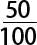
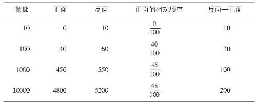
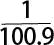
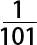
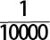

到目前为止，我们探讨了对概率的全部解释，以及它们的许多变体。是时候检验一下我们的劳动成果了。在本章，我们来看一看这些解释如何可能用来阐明一些常见的谬误、相关的谜题以及一个有趣的悖论。学习这些对于提高你使用概率进行推理的能力（并避免一些令人不可思议的常见错误），具有独特的价值。
中译本边码：128
首先让我们来讲一个著名的故事。1913年，在蒙特卡洛的勒格兰德赌场的一张轮盘赌桌上发生了一件不寻常的事。（如果你忘记了轮盘赌是怎么回事，可以返回前面去看第四章的第六部分。）球一次又一次地落到黑色区域。事实上，它连续26次落在“黑”上。
此时，你觉得赌徒会怎样去赌呢？实际上就是，你认为当旋转的次数越来越多时，对于刚刚过去的六次轮盘滚动，他们会怎样去赌？（已经连续出现多次黑色结果这一消息已经传开。结果，赌徒们围拢在赌桌旁边。）你会发现问题的答案令人感到意外，他们正在赌的是红 色 。
中译本边码：129
他们在想什么呢？简短的回答似乎是这样的。他们仍旧会假定轮盘是公平的。他们得出结论：接下来必定会出现红色的结果，且这个概率会不断增加。毕竟，暂时的不平衡在后面必定会被抵消，不是吗？这难道不就是“平均法则”所说的内容吗？另外，连续20次出现黑色的概率是极低的。连续21次出现黑色的概率会更低！因此，事实上不可能有人会见证这样一个事件。
这是一种诱人但完全错误的思考方式。为什么呢？赌徒们假设，下一次旋转轮盘会产生的结果依赖于 前面已经发生的结果。然而事实上，每一次旋转所得的结果都独立于 其他次旋转所得的结果。一个公平的轮盘赌给出连续20次黑色的结果是 极不可能的事（更不用说26次了）。因此，如果你从不期望会看到这样一件事情发生，那么你也没有错。但由此并不能得出如下结论：当一个公平的轮盘已经连续出现20次黑色结果时 ，第21次也为黑色的概率就很低。它是公平的！因此，对任意一次给定的旋转来说，它给出一个黑色结果的概率就是二分之一。或者用更加形式化的表达就是：对n 的任意取值来说，P（黑色）＝P（黑色，前n 次结果是黑色）。
如果我们根据基于世界的概率及稳定性法则进行思考——这是我们在前面两章所讨论的——我们就能看到赌徒们另外一个错误的推理方式了。如果他们就是按照这种方式思考概率的，他们就会期望，随着试验数量的增加，每种性质出现的频率也会变得越来越稳定。如果这是一个公平的轮盘赌，他们就会期望黑色以略低于二分之一的频率发生。由此看来，在大量黑色结果出现之后，红色结果的出现难道不是要归功于 稳定性法则发挥的作用吗？
不，仍然不是这样，因为这将要求这个系统产生具有某种记忆的结果。基于它之前已经给出的结果，轮盘无论如何都得“知道”：是时候给出红色的结果了。或者说得更精确一点，轮盘先前的结果对将来的结果会施加因果影响。但是，稳定性法则为真并不要求 任何这样的“记忆”（或者单个结果之间的因果联系）存在。
中译本边码：130
不过，有理由认为它显然需要有这种“记忆”。如果随着旋转次数的增加，红色结果的相对频率趋近于黑色结果的相对频率，那么，红色结果的数量不是也必须趋近于黑色结果的数量吗？答案是否定的，尽管不是那么明显。为了搞清楚这一点，考虑表9.1中所表示的多次抛硬币的假设性结果。尽管反面朝上结果的数量与正面朝上结果的数量之间的差别显著增加 ，但正面的相对频率在每个数据点上更加接近二分之一（

）。因此，只要进程是公平的并且只有两种可能的结果，从稳定性法则并不能推出，一种结果的出现将会与另一种结果的出现进行“匹配”。表9.1

为了避免赌徒谬误，根据倾向性进行思考是有帮助的。在波普尔的单一事例的变体当中，这种情境尤其清楚。这个系统（包含这个过程）——例如轮盘和操作者——具有相同的 倾向，即在每个具体情况中产生每一种结果。这是这个系统的一种性质 。这个系统过去运行的诸结果是完全不相关的。相比较而言，从吉列斯的长期观点的变体来看，这个系统具有一种倾向，即随着时间的推移，每个结果都会产生一个具体的相对频率。但是，这一点与独立性的结果是相容的，而这并不意味着未来的结果必定会“抵消”过去的结果，这些我们在谈到稳定性法则时已经阐述过了。
当然，仔细观察发生了什么——同样以轮盘赌为例——可以 对概率提供一种指导，并因此 对将来会发生什么提供某种指导。例如，设想黑色结果已经成为长期结果之后，上面提到的勒格兰德赌场的轮盘赌正在进行第一次旋转。如果你知道已发生过的结果，作为一个观察者，你可能会合理地把这些重复结果看作证明轮盘存在偏差的证据。更具体地说，你也许会认为黑色的概率高于红色的概率。这是合理的。（可能的物理原因包括一颗正在被滚动的铁球，以及藏在黑色区域下面的强力磁铁。）但是，这与承认赌徒谬误截然不同，因为你将会使用过去的数据去计算每次旋转出现黑色结果的概率。你不会去假定一次旋转所发生的事情对另一次旋转所发生的事情具有任何影响 。同样要注意你的假设性推理会有什么样的结果。你会更加倾向于赌黑色，而不是红色。那些承认赌徒谬误的人所做的事却正好相反。
中译本边码：131
值得简单提一下的，还有哈金（Ian Hacking，1987）讨论过的一种逆向赌徒谬误 。其中涉及由现在发生了什么而错误地推出过去 发生了什么，而不是推出未来会发生什么。或者更精确地说，在类博弈的场景当中，它涉及这个假定：某个时间点上的结果以某种方式依赖于 较早的结果。哈金给出这样一个例子：
设想一名赌徒进入了一个房间，走向一个公平的装置（去掷两个骰子），看到它掷出了双六点。一个爱开玩笑的人问：“你觉得这是今天晚上第一次掷吗？还是说已经掷过很多次了？”这个赌徒推理如下：既然双六点极少出现，那就很可能已经掷过很多次了。（Hacking 1987： 33）
为什么这是不可思议的，原因应该很明显。事实上，只要骰子是公平的，那么，任何一个 结果的发生都与其他结果的发生一样少见。一个一点后面跟着一个二点，与一个二点后面跟着一个一点，以及一个一点后面跟着一个三点，这些具有完全相同的概率。36种不可区分的可能性当中的每一种，与其他任何一种的发生一样不常 见。
此外，我自己的观点是，逆向赌徒谬误不需要只是涉及关于过去已经发生多少次 试验的推理。再次考虑勒格兰德赌场中黑色结果的长期出现。一名并不知道最近结果的赌徒可能会得出结论说，之前在某个点上必然发生过红色结果的长期出现，或许就在不远的过去，而当他去仔细观察时，这种情况正在被“取消”。下面这一点很有意思，同时也许会令人感到有些迷惑：当黑色结果长期出现的时候，这种可能性似乎并没有被这个赌徒考虑到。
中译本边码：132
假想你已经申请了人寿保险，而且你已经有了一整套验血结果。（标准的做法是，人寿保险公司在决定是否提供保障之前，要做血液检测，例如检测艾滋病毒。）血液检测的结果之一，是对一种不常见的疾病得出了阳性结果，而感染这种疾病的概率是万分之一。这项检测从来没有给出过错误的阴性结果 ——如果血液来自一名患病的人，检测总能得出一个阳性的结果。但是，这个检测有时候也会给出错误的阳性结果 ——如果血液并不是 来自一名患者，有时候却会得出阳性结果。更具体地说，它得出错误阳性结果的概率是百分之一。问题是：你患上这种病的概率是多少呢？
你想说这个概率是百分之九十九吗？基于心理学实验的证据，许多人都会这样认为。他们会因此而认为，这个检测结果说明他们已经得了这种不常见的病。但这是错误的，因为它忽视了一条关键的可用信息，也就是感染这种不常见病的人群的基础比率 。要记得：患上这种病的概率只有万分之一。然而，如果放到每个人的身上，那么这个检测的结果就（有可能）让我们认为患上这种病的概率要远大于万分之一。
在这个事例中，如果我们通过一种与概率的相对频率解释相容的方式考虑全部信息，那就不仅有助于避免犯错，而且很容易搞清楚正确答案是什么。现在就让我们来试试吧：
1. 10000个人当中有1个人患这种病。
2. 每个患这种病的人检测结果都呈阳性。
3. 因此，每10000个人当中有1个人检测呈阳性并患上这种病。
4. 每10000个人当中有9999个人不患这种病。
中译本边码：133
5. 每9999个人当中有99.99个人检测呈阳性但并没有患这种病。
6. 因此，每10000个人当中有99.9个人检测呈阳性但并没有患这种病。
这样，结果呈阳性并且确实 患这种病的人的相对频率是多少呢？再来几行推理，就很容易推算出来了：
7. 每10000个人当中有100.9个人对这种病检测呈阳性。（由3和6可得）
8. 每100.9个人当中有1个检测呈阳性者患这种病。（由1和7可得）
9. 因此，当检测呈阳性时患这种病的概率是

≈
。这样看来，你不应该感到恐慌！（因为我们是在用一种相对频率的方式谈论问题，所以严格说来，你不应该给你自己指派一个概率。然而，你可以把你自己想象成一个从集合体当中随机抽取出来的人。）如果保险公司因为阳性的结果而拒绝让你参保，那会是相当不公平的。这里的风险是最小的。唉，保险公司通常是不公平的，因为他们总是过于谨慎。这个问题我在这里解决不了。我倒希望我们能够解决。
值得注意的是：附录B中所探讨的贝叶斯定理，对于避免这种谬误具有十分重要的价值。还是考虑上面的例子吧。令h 表示“你得了这种病”。令e 表示“你对这种病的检测呈阳性”。我们感兴趣的是P（h, e ），或者h 的后验概率 ，我们可以用贝叶斯定理把它算出来。如果你愿意试着说明这一点，可以查阅一下该附录中给出的样例。下面就把上例中给出的信息用形式的方式表达出来，作为查阅的指南：
1. P（e, h ）是1；如果你得了这种病，那么检测将会明确地表明这一点。
2. P（e ，¬h ）是1％，或者0.01；检测给出一个“错误阳性”的机会很小。
3. P（h ）是

，或者0.0001；这种病的基础比率很低。所谓“倒置谬误”指的是把条件概率和它的逆向形式混淆了；或者用形式化的语言表达，当把P（p, q ）和P（q, p ）混淆的时候，就会发生倒置谬误。为什么这是错误的——如果它不是那么显而易见的——我们可以通过概率的逻辑解释的形式，以及逻辑衍推的例子提供最好的说明。令p 是“所有兔子都是黑色的，并且蒂姆是一只兔子”，q 是“蒂姆是黑色的”。P（q, p ）等于1，因为p 衍推q ，但q 并不衍推p 。就q 提供的信息来说，蒂姆可能会是一个男人、一条蛇、一条狗、一只猫、一匹马，甚至可能会是一个玩具。因此，很难说q 表示“蒂姆是一只兔子”。另外，存在一个黑色的事物（它碰巧被称作“蒂姆”），仅凭这个事实并不足以确证“所有兔子都是黑色的”。
中译本边码：134
你也许会觉得，这个错误是如此 明显，只有傻子才会犯。但值得注意的一点是，有证据表明，这个错误是 人们经常犯的。更糟糕的是，（被广泛认可的）专家们甚至也经常犯这个错误，从而导致严重的后果。科勒（Jonathan Koehler 1996）就探讨了庭审过程中这个错误是怎么犯的，当时法医学家被问到怎样把遗传物质和人进行“匹配”。例如，设想我的DNA与犯罪现场发现的一根头发的DNA之间存在一种匹配。一名法医学家也许会把在这根头发不是我的情况下发生这种匹配的概率表示为：P（ 匹配 ， 不是我的 ） 。我们经常听到这样的证词。它可能是这样的：“如果这根头发不是达瑞的，那么存在一种DNA匹配的机会小于百万分之一。”但这和P（ 不是我的 ， 匹配 ） 完全不同。因此，得出如下结论是完全错误的：“假定我们已经发现了这种匹配，则这根头发不是达瑞的头发的机会小于百万分之一。”然而，一些法医学家竟然真的就得出了这样的结论，或者至少确实说了这句话。下面就是科勒（Koehler 1996，n.8）给出的例子，它使用的是庭审记录：
在证明了来自被害人血液与取自一条毛毯的血迹之间的一种DNA匹配被发现之后，佛罗里达州案件当中的一名联邦调查局科学家被一名公诉人质询如下：
问： 在你的专业与科学领域内，当你说到匹配的时候，究竟是什么意思？
中译本边码：135
答： 它们是等同的。
问： 这样的话，你能说毛毯上的血来自瑞瓦发（受害者）吗？
答： 我可以非常确定地说，这两份DNA样本是匹配的，并且它们是等同的。根据人口统计学，我们能够得出这里的血来自受害者以外的其他人的概率。
问： 在这个案子里，这个概率是多少呢？
答： 在这个案子里，这个概率是指，有七百万分之一的机会，这里的血是其他人的，而不是受害者的。
有点吓人，不是吗？更糟糕的是，科勒（Koehler 1996）的实验表明，这样的误导性证据有时候能够强烈地影响陪审员做出有罪的判决。这样也就不用感到意外了。因此，聊以慰藉的是使用逻辑术语进行思考——例如上面那些在阐述这种谬误时使用的术语——能够帮助我们避免这种错误。这是卡林诺夫斯基、菲得乐和卡明（Pawel Kalinowski，Fiona Fidler，and Geoff Cumming 2008）的一个发现。他们还发现，如果鼓励学生们使用附录B中给出的贝叶斯定理，就可以降低他们犯这种谬误的风险。这一点并不奇怪，因为这两个策略都是鼓励学生们用符号去表达陈述——像p 和q 这样的命题变项——并考虑这些符号之间的单向关系。
最后，值得补充的一点是，倒置谬误也可以解释清楚，为什么有些 人容易忽略基础比率。一旦给他们提供完全不同的信息，比如P（p, q ），他们就可能会觉得自己得到了正在寻找的信息，比如P（q, p ）。
考察下面这段话和后面跟着的问题：
弗兰克35岁，高个子，体格健壮。他年轻时在很多运动项目上表现优秀。从小时候起他就在足球上显示了特别的天分，在英格兰18岁以下国家队担任中场。后来他在一家国内的俱乐部踢球。他29岁时退役。
中译本边码：136
以下哪一项的可能性更大？
（1）弗兰克是一个老师。
（2）弗兰克是一个体育老师，并且是他所在学校足球队的教练。
你得出正确答案了吗？上面这一段是以特沃斯基和坎尼曼（Amos Tversky and Daniel Kahneman 1982）在一个实验中使用的如下一段话作为基础的：
琳达31岁，单身，坦率，非常聪明。她所学的专业是哲学。当还是学生的时候她就特别关注性别歧视和社会正义问题，并且参加过多次反核示威游行。
以下哪一项的可能性更大？
（1）琳达是一名银行出纳。
（2）琳达是一名银行出纳，并且积极参加女权运动。
特沃斯基和坎尼曼实验中的大多数实验对象都选择了第二个选项。但这是错误的。原因很简单。事件或者命题的合取概率不可能大于两个合取支当中任意一个的概率。或者可以形式化地表述为：P（p &q ）≤P（p ）并且P（p &q ）≤P（q ）。（要是在回答我的例子时犯了这个错，情况会更加糟糕。它不仅包括了“弗兰克是一个老师”（p ），而且包括了“弗兰克教体育课”（q ）和“弗兰克是他所在学校足球队的教练”（r ）。P（p &q &r ）≤P（p ）比P（p &q ）≤P（p ）更加明 显 。）
特沃斯基和坎尼曼的原始实验是针对学生做的。尽管难以置信而且让人害怕，但他们后来发现，那些被请求基于病人对症状的描述进行诊断的外科医生也会犯同样的错误——91％的外科医生认为，病人更可能遇到两个问题，而不是一个。详情参见Tversky and Kahneman（1983： 301—302）。
那么，为什么会犯这样的错呢？一个简单的回答是，在这些段落当中，没有任何涉及银行、银行职员、教师等等的信息。因此，人们的注意力转向那些看上去与所讨论的材料最相关的选项。关于究竟为什么会是这样，存在一些争议，但我们在这里不想对此深究。如果你对此有兴趣，读《代表性判断》（Tversky and Kahneman 1982）是一个不错的开始。
中译本边码：137
关于概率的许多不同解释都有助于阐明这个谬误。可以考虑第四章中所讨论的赌博情景与合理赌商。一个理性人（面对一个精明的庄家），如果去赌两匹分别赢得各自比赛的马，而不是去赌那些赢得比赛的马当中的仅仅一匹，他就不会有更高的赌商。
有意思的是，研究表明，有些情况下人们不太可能犯这种合取的谬误，至少在下面这种情况下是这样：如果问题的提出是通过一种基于频率的方式，并提到了一个具体的参照类 。例如，菲得乐（Klaus Fiedler 1988）就发现，如果他像下面这样提出“琳达问题”，犯合取谬误的人的比例会急剧下降：
有100个符合上述（琳达）描述的人。他们当中有多少是：
（a）银行出纳
（b）银行出纳，并且积极参加女权运动
到此我们就结束了对指定谬误的讨论。我们已经看出，根据概率的具体解释进行思考能够帮助我们阐明导致这些谬误的根由，并且能够帮助我们避免犯这些谬误。
我之所以要列出这最后一节，部分原因是为了寻求一些乐趣，不过从它也可以得出一些道理来。我不但要表达一个相当迷人的悖论——至少它通常就被叫作“悖论”——我还要讲一个有意思的故事，这个故事说的是很多傲慢的男性哲学教授在不赞同一名女性哲学业余爱好者（她放弃哲学学位而半途离开大学）的观点之后有多么丢脸。
中译本边码：138
这个故事讲的是20世纪90年代早期《展示》（Parade ）杂志的沃斯·莎凡特·玛丽莲（Marilyn vos Savant）专栏“请问玛丽莲”当中提出的一个谜题。沃斯·莎凡特最知名的事，是她在智商测试中得到的高分；她连续五年被载入吉尼斯世界纪录的“最高智商”之列。（顺便说一下，由于智商测试不可靠，这个项目后来被取消了。另外，沃斯·莎凡特童年时代的测试结果被误读为智商228，而根据测试说明书，当时最高的智商等级是“170＋”。顺带说一句，大约7岁时，我也做过一次儿童智商测试，也得到了170＋的分数。但很惨，我既没有得名，也没有获利。然而这是一个非常好的结果，因为我的学校要求把我送去看精神科医生。由于我的不当行为，他们认为我在学 上有障碍。我怀疑他们在教 上有困难。）
这个谜题——事实上，这只是我们的老朋友伯特兰（Bertrand 1888）提出的一个谜题的另一个版本——现在人们知道指的是他的盒子悖论 （box paradox），就是有些人所知道的“蒙提·霍尔问题”（the Monty Hall problem）（参阅Selvin 1975）——具体如下（参见vos Savant 2014）：
设想你在参加一个游戏节目，你可以在三扇门中选择一扇。其中的一扇门后面是一辆轿车，其他两扇门后面都是山羊。你选择了一扇门，比如说1号门，然而，知道这些门后面都有什么的主持人打开了另外一扇门，比如说3号门，这扇门后面是一只山羊。他对你说，“你想选2号门吗？”对你来说，改变你的选择对你有利吗？
惠特克（Craig F. Whitaker）
哥伦比亚，马里兰
下面是沃斯·莎凡特（vos Savant 2014）的回答：
是的；你应该改换自己的选择。第一扇门有三分之一的可能获胜，但第二扇门却有三分之二的可能性。我有办法让所发生的事情变得更加形象。假设有一百万扇门，你选择了1号门。然后，知道这些门后面有什么而且总是想避免打开后面有大奖的那扇门的主持人打开了除777777号门之外其他所有的门。这时候你就应该尽快改换到那扇门，不是吗？
沃斯·莎凡特的这个说法对吗？许多学者，包括数学教授都说“不对！”而且，在她为自己的回答做了更加详尽的辩护之后，他们仍然这样认为。下面这些是从学者们的信中选择摘录的一些好玩的说法，其中许多是从沃斯·莎凡特（vos Savant 2014）那儿摘过来的：
中译本边码：139
无论你是否改换自己的选择，胜算都是一样的。这个国家的数学文盲已经够多了，我们不需要“世上最高智商的人”来制造更多文盲。这是耻辱！
你把它搞砸了！……作为一名专业数学家，我非常关注普通大众缺乏数学技能这件事。只要你承认自己的错误，将来再小心一些，就是帮我的忙了。
如果你再次尝试回答这类问题，那么回答之前我能不能建议你找一本标准的概率教材读一读呢？
你会收到许多来自高中生和本科生谈论这个主题的信。或许你应该记下其中一些地址，以便帮你把将来的专栏搞好。
你犯了一个错误，但要看到积极的方面。如果所有那些博士都错了，那么这个国家将会遭遇很严重的危机。
哇！如果上面最后这句话是真的，既然所有博士都是 错的（既然他们和沃斯·莎凡特共同认可一些假定，这些我们会在下面讲），那么，说这个国家实际上遭遇了“某种很严重的危机”会让人觉得好笑。要想搞清楚这是为什么，在游戏节目的不断重复当中，根据长期倾向性考虑问题会是有帮助的。
让我们仔细思考一下这个过程，循着我们的思考进程，列出相应的结果。
第一步：这辆轿车随机地放在这三扇门当中某一扇的后面。
（这个假定说得并不清楚。在不改变这个结果的情况下，有可能其他东西占据了这个位置，例如，轿车被故意重复地放在同一扇门后面——或者一系列特定的门后面——但对于你来说，可以在第二步随机选择一扇门。）
中译本边码：140
第二步：参与者选择一扇门。
结果一：从长远看，第二步被选择的门后面会有轿车的机会大约是三分之一（最多就是三分之一的机会）。
这里需要注意的是，第一步中做出的随机性假定（在原始问题或者在沃斯·莎凡特的回答所列出的那些假定中，它并不明显）十分重要。如果没有这个假定，下面这个就可能是真的了：例如，参与者总是选择第一扇门，而轿车总是放在第一扇门后面。现在让我们充分考虑余下的过程。
第三步：如果参与者选择的门后面有小轿车，那么主持人必须随机打开其他两扇门当中的某一扇。如果参与者选择的门后面没有小轿车，那么主持人必须打开没有小轿车在它后面、没有被选择的门。因此，主持人通过一种并不能标示出小轿车在哪里的方式 ，打开一扇没有小轿车在它后面、没有被选择的门。
（这是原始问题和沃斯·莎凡特的回答中被忽略的又一关键假定。然而，沃斯·莎凡特确实 明确要求主持人“总是避开可以获奖的那扇门”。）
结果二：主持人在第三步的行动决不会改变 结果一，也就是说，第二步选择的门会有三分之一的概率后面有小轿车。从这一点——以及小轿车在第三步之后仍然没有被打开的两扇门当中的某一扇后面的事实——可以推出，在第二步没有被选的 、没有打开的门后面有轿车的概率是三分之二。
第四步：参与者有权利改变他们对门的选择（改为选择第二步没有选 、没有被打开的 门 ）。
第五步：参与者将赢得自己所选择门后面的任何东西。
中译本边码：141
结果三：改变对门的选择，将有三分之二的概率赢得小轿车。
如果你仍然不相信，你可以亲自去做一次这个实验。或者如果你用网络搜索“蒙提·霍尔模拟器”（Monty Hall simulator），你就可以找到一个在线的计算机模拟器。（在我写本书的时候，网址是http：//stayorswitch.com。）但关键在于，要弄明白在这个问题当中没有 出现、却在第三步之后提到的那些假定究竟起到了什么样的作用。为了说明这一点，设想第三步有所不同。设想主持人必须 打开未被选择的门之一，但他并不知道小轿车在哪里，因此，他打开的门后面可能 会有小轿车。如果他打开的门后面确实 有小轿车，那么在第四步执行之前游戏就会结束（参与者只赢得了一只山羊）。在第四步改变对门的选择的长期倾向性现在来看是不同的 。我们来这样考虑吧。有三分之一机会，参与者一开始就会挑选出正确的门。另外三分之一机会，主持人将在（修改过的）第三步挑出正确的门。（如果这还不是那么明显，那就像下面这样来设想。有三分之二机会，参与者没有挑出正确的门。主持人只有一半 的机会打开后面有小轿车的门。于是，主持人总共有三分之一的机会找到小轿车；因为三分之二乘以二分之一等于三分之一。）在最后三分之一的机会里，游戏将会到达第四步，小轿车将会在参与者一开始没 选、没有被打开的门的后面。于是，总共只有三分之二的机会到达第四步。在这一点上，会有一半的机会，小轿车就在第二步所选的门的后面。有另一半的机会，它会在另外一扇未被打开的门的后面。因此，在第四步改变对门的选择没有任何好处（或坏处）。
从这个故事可以总结两点。第一点，如果不经过仔细并且系统的分析，看上去简单的概率问题也可能会变得很棘手，这一点也得到了本章前面几个部分我们所讨论的其他发现的支持。而且在很多情况下，如果能根据不同的解释进行思考，将能够帮助我们更好地理解这些问题。
第二点，在试图处理概率问题之前，一定要确定这个问题得到了明确的界定，这一点很重要。而根据不同的解释进行思考，有时候能够帮我们搞清楚一个概率问题的意义是否已经得到了明确的界定。在这里，根据长期倾向性思考概率问题被证明是有帮助的，因为它把注意力集中在了过程或者系统上面 。（另一方面，根据对于后果的置信度思考概率，就不一定有这样的功效了。）
中译本边码：142
推荐读物
本章参考了很多讨论上文谬误的心理学成果。要想寻找推理当中所犯的相同错误的细节，一本好玩的入门书——它对我们讨论过的一些谬误进行了更多的阐述——是《统计之失：完全手册》（Reinhart 2015）。也可以访问网址：www.statisticsdonewrong.com。